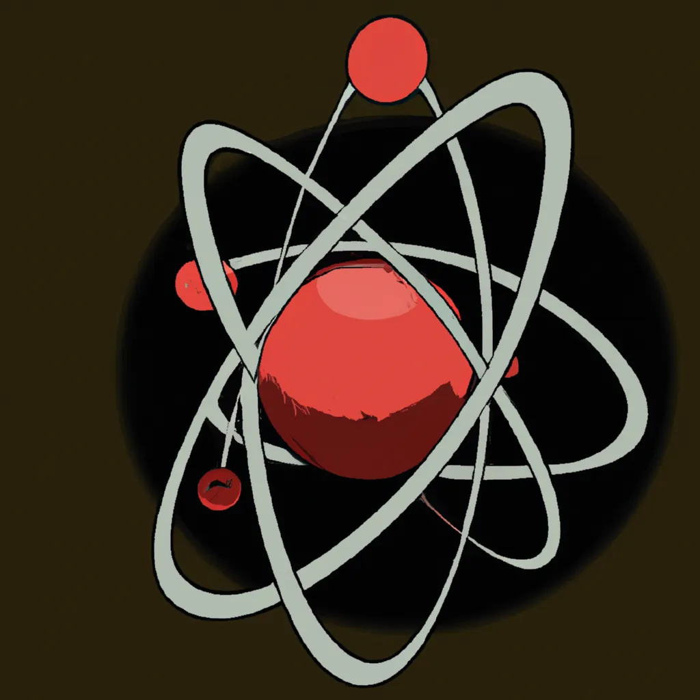

Modelo de Bohr
O modelo atômico de Bohr, proposto por Niels Bohr em 1913, é uma teoria que descreve a estrutura dos átomos com base em quantização de energia. Segundo esse modelo:
- Níveis de Energia Quantizados:Os elétrons em um átomo ocupam órbitas circulares ao redor do núcleo em níveis de energia específicos e bem definidos. Essas órbitas são chamadas de camadas ou níveis de energia.
- Transições de Energia:Os elétrons podem saltar de uma órbita para outra ao absorver ou emitir uma quantidade específica de energia, na forma de fótons. A diferença de energia entre as órbitas determina a cor da luz emitida ou absorvida.
- Estabilidade dos Elétrons:Enquanto os elétrons permanecem em uma órbita específica, eles não emitem radiação e, portanto, não perdem energia. A radiação é emitida ou absorvida somente quando os elétrons fazem transições entre as órbitas.
Esse modelo foi um avanço importante na física atômica e ajudou a explicar os espectros de emissão e absorção dos átomos, embora tenha sido posteriormente aprimorado e complementado por modelos mais avançados, como o modelo quântico.
Modelo de Bohr, Ciência Todo Dia
